Projetos Tech
Início
Projeto para amigas feito com tela 15x20, linha de meada preta e agulha de costura.
Clique na imagem para ampliar a imagem.
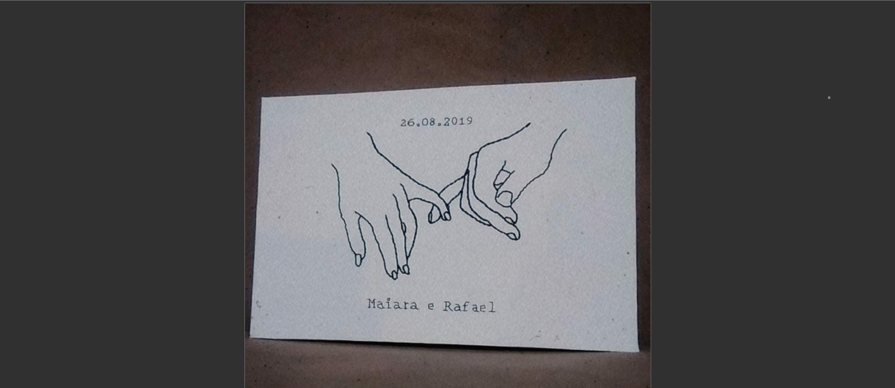
Projeto para casal feito com tela 15x20, linha de meada preta e agulha de costura.
Clique na imagem para ampliar a imagem.
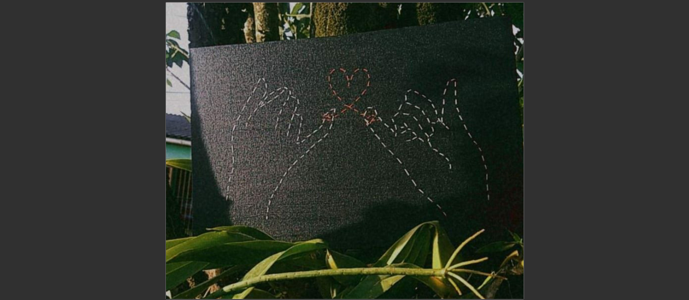
Projeto para casal feito com tela 15x20, linha de costura branca e vermelha e agulha de costura.
Clique na imagem para ampliar a imagem.
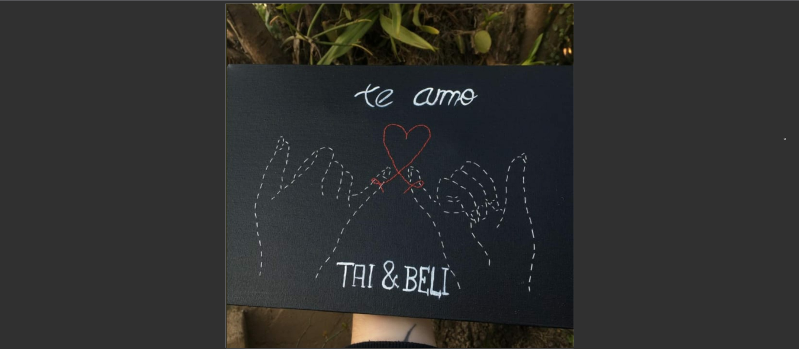
Projeto Esboço feito com tela 15x20, linha de costura branca, caneta de gel branca e agulha de costura.
Clique na imagem para ampliar a imagem.
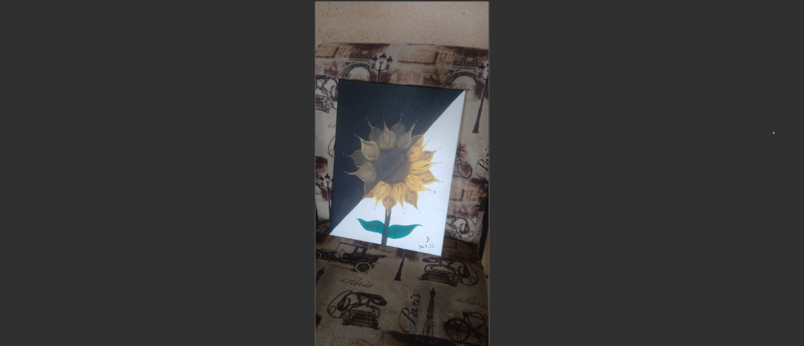
Pintura em tela feita em 6h com tinta acrílica (amarelo, preto, marrom, branco e verde) e pincéis n° 6,10 e 12.
Clique na imagem para ampliar a imagem.
 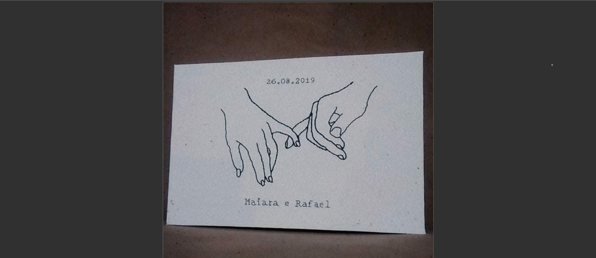
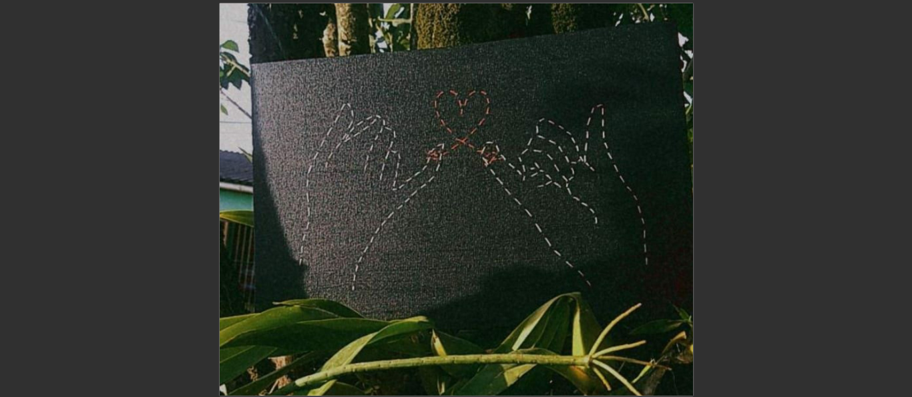
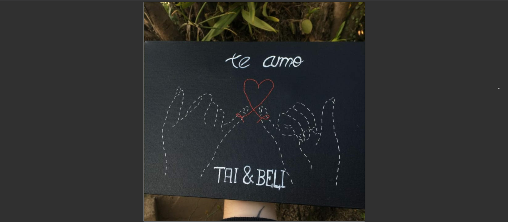
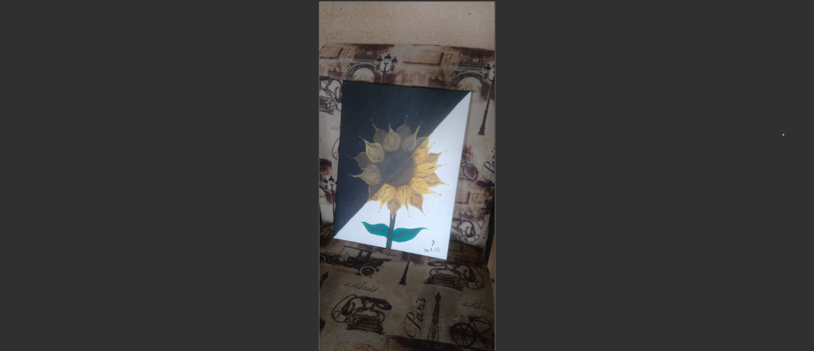
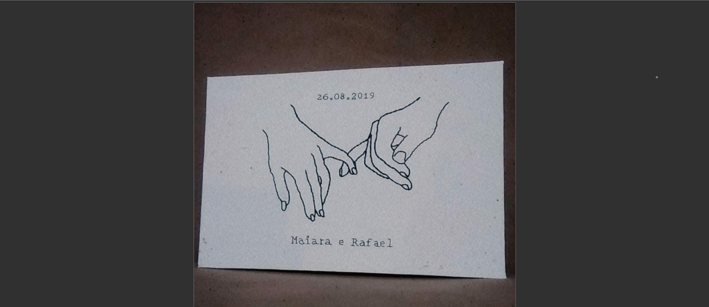
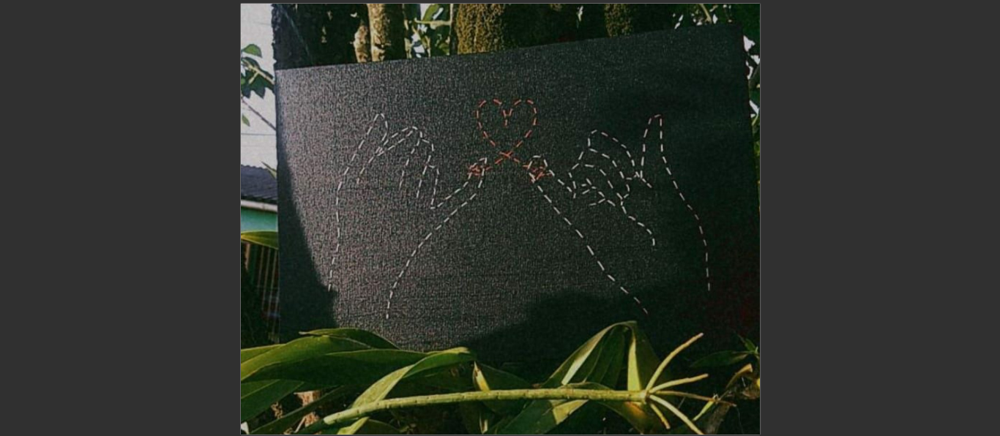
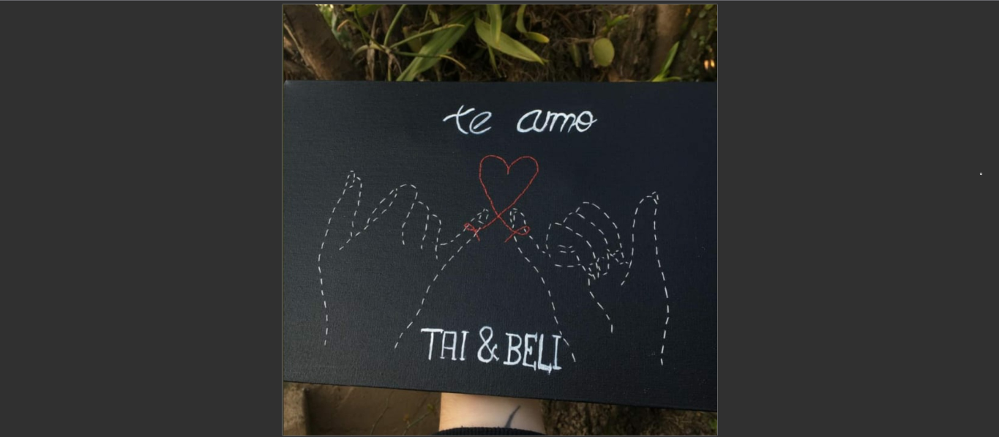
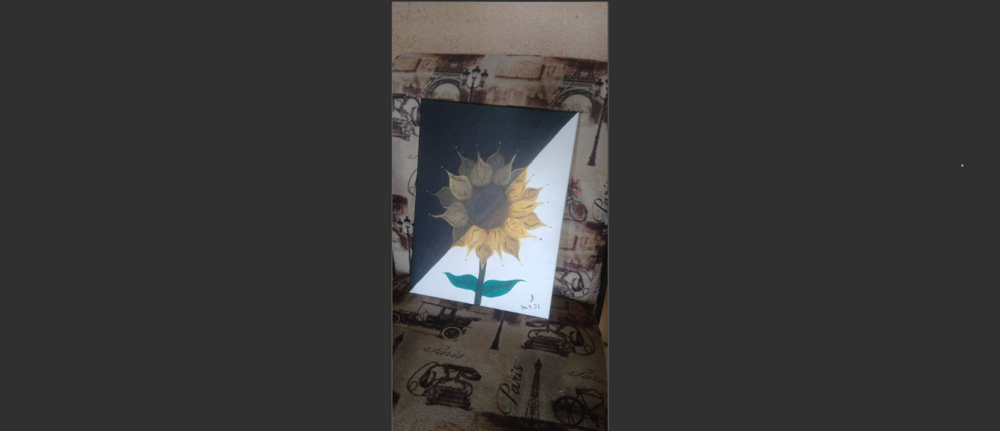